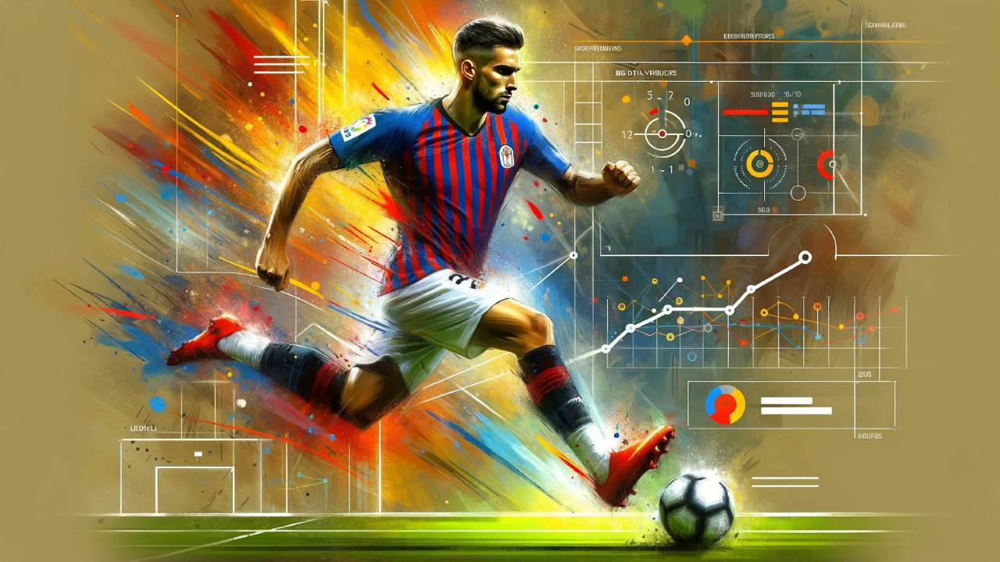
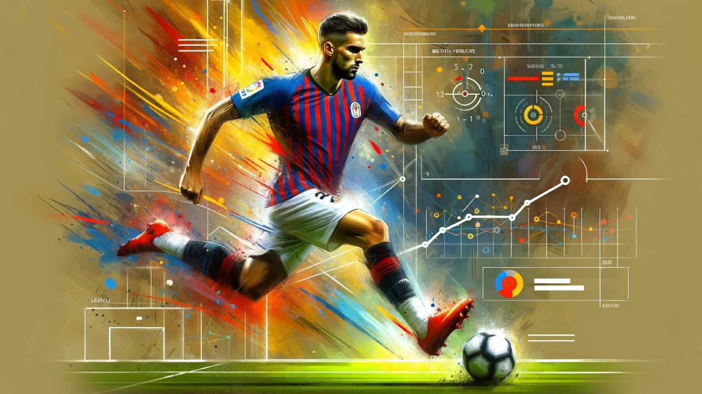
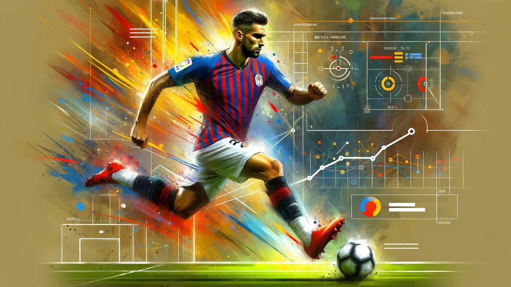

Gallery
Here you can explore some of my favorite moments, hobbies, or inspiration in the form of images and videos.
 

I am a passionate learner and aspiring programmer. I enjoy working with web technologies and building meaningful digital experiences.
Growing up in Somalia came with many challenges. Access to resources like electricity and internet was limited, and educational opportunities were not always guaranteed. Despite this, I developed a strong desire to learn and improve myself, even when times were tough.
One of the biggest sources of joy during my childhood was playing soccer with friends. Whether it was a dusty street or an open field, the game brought people together and helped build lifelong memories. It taught me teamwork, discipline, and perseverance.
Over time, I became fascinated with technology—especially how websites and apps are made. This curiosity slowly grew into a passion for programming. What started as simple exploration has now turned into a focused goal: becoming a skilled developer and creating tools that make an impact.
Here you can explore some of my favorite moments, hobbies, or inspiration in the form of images and videos.
